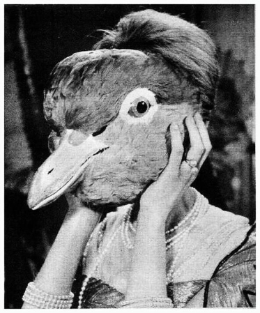
Genny
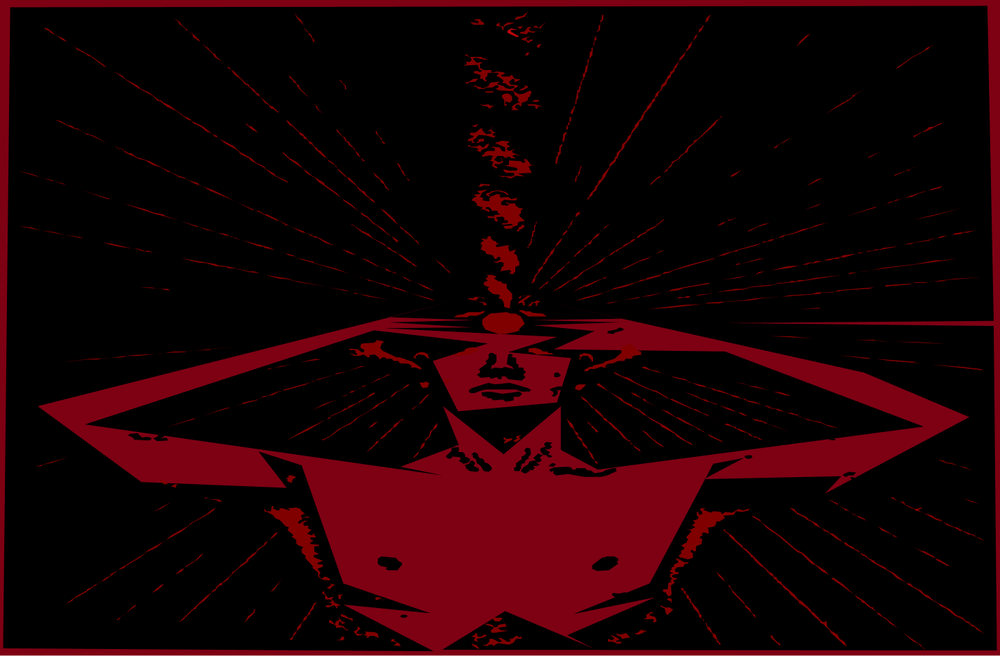
BRUTE — это фестиваль, посвящённый
свободе, инстинкту и той части человека,
которую цивилизация научила скрывать.
Мероприятие, занимающее площадь более 1000
квадратных метров, включает в себя несение коня.
Пение песен
Состязания в парах
Ритуальное употребление вина
Выступления художников
Соревнование поэтов и музыкантов
Театральное представление трагедий и комедий
Праздничное шествие, парад
В конце ритуальная церемония
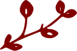
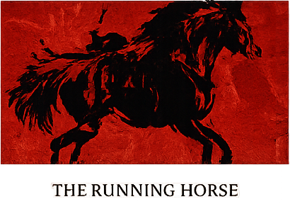
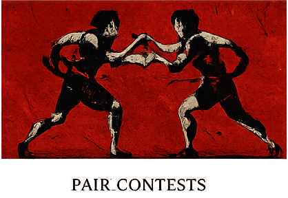
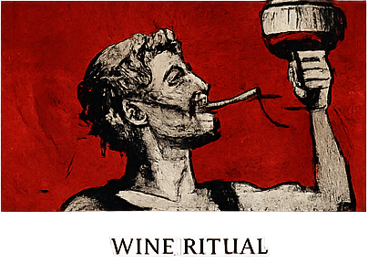
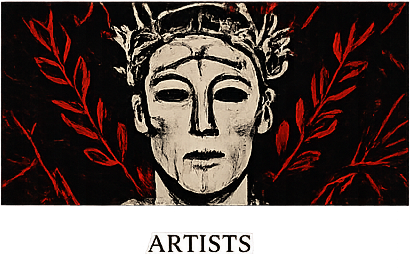
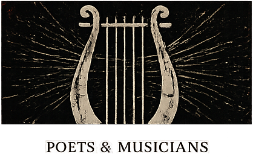
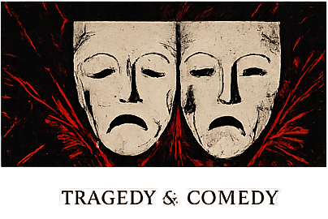
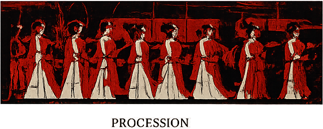
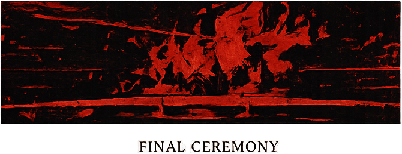
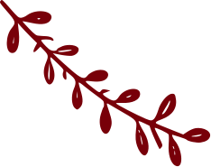
Тысячи лет назад люди уже знали, как на время
перестать быть собой.
Они собирались вместе в честь Диониса — бога вина,
театра, экстаза и освобождения от привычного
порядка.
В древних Афинах проходили Сельские Дионисии.
Люди выходили на улицы, собирались в процессии,
несли символы бога, пели, танцевали, пировали и
праздновали вместе.
На время повседневная жизнь отступала.
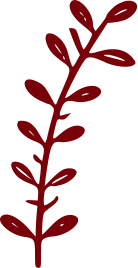
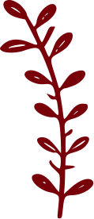
Три человека, которые никогда не переставали быть частью этого
сообщества.
Мы всегда чувствовали, что в человеке есть что-то большее, чем то,
что он показывает миру. Что-то дикое. Свободное. Настоящее.
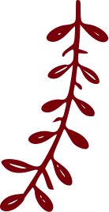
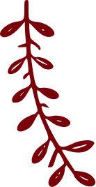

Genny
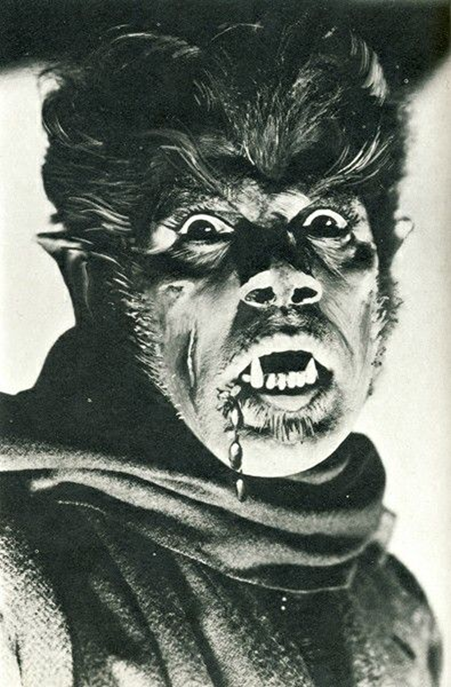
Sofia
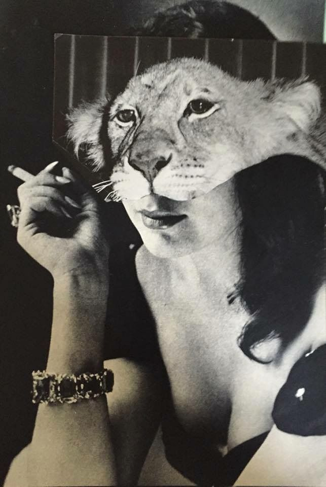
Margo